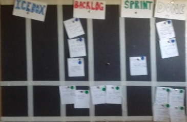

Over the last month I've been experimenting with an "agile" time-management method for my solo-game dev work. The verdict? Works like a charm!
Recently, I switched from a full-time web dev position to being a full-time solo game dev. Now, this isn't my first time doing solo projects full-time, and I know that my biggest enemy to productivity is often myself, so I wanted to be absolutely sure that I use my time to 100% capacity.
In my "day jobs", I've noticed I could churn out features and code at a pretty steady rate. This had to do with, 1. the fact that other people relied on me kept me motivated, 2. certain tasks were taken care of by others, so all I needed to do was focus on implementing technical specs, and 3. I worked with a "professional detachment" from the project.
I roll my eyes at agile-whatever as much as the next guy, but, still, I needed something of that bureaucracy to keep me going. I've tried a variety of online task trackers that worked for other people, but for whatever reason, none of those clicked. After a month of using my kanban technique, I think it's safe to say this one did click.
michaelb's solo game dev kanban magic

My Kanban board is posted on the wall in front of my desk. I use index cards cut in half as "tickets". The columns are Icebox, Backlog, Sprint, In Progress, and Done. The In Progress area isn't visible in this photo, but that's because I move In Progress tickets down to a separate spot so they can be in front of me as I work on them. The color coding lets me split based on project and/or ticket type.
The method I came up with, click-baity titles aside, is just a slew of garden-variety agile concepts adapted for my needs as a solo game dev. The rules:
- 2-3 day sprints
- Track all time spent with small tickets
- Kanban board
- Dead trees for all the things!
This worked for me. Maybe with some personalization, there could be something helpful in here for you!
How to do it
Split up your time into 2-3 day sprints. Short sprints = more agile, agile is god, and since 1 person is the smallest team, should also have very short sprints, or something. At the beginning of each sprint, you will move tickets (portions of work) from "backlog" to "sprint" on your kanban board.
Never do anything without first writing a ticket.
- I assign points to my ticket based on a rough estimate of the amount of time I'll spend on it, in increments of 2, 4, or 8 hours. My estimates got better with practice.
- Each ticket must be "deliverable" -- that is, it should integrate into your final product and not break anything else or leave stuff in a state of disrepair.
- Track everything you do as tickets: You'll be making design tickets, art tickets, programming tickets, marketing tickets, even blogging tickets (guess what I have sitting in front of me as I write this blog post?)
- The "deliverable" varies based on the ticket type. For code, it's a git commit (you are using version control... right?). For designing a feature, it's a specification document saying what it should do, to be read by whoever will implement it (e.g. you).
Track your sprints on a Kanban board. The board I use has the following categories:
- Icebox: These are tickets that are "nice to have". They are not essential to the minimum feature-set of your game. In general, when you have a "cool idea", it should go here first as you work on more pressing stuff.
- Backlog: These are tickets you know you will need to complete eventually. The tickets here should be the route to a milestone of some kind, such as your first alpha or your next beta, or the released game.
- Sprint: You have committed to these tickets for the current sprint. Only move to here as many tickets as you can do in one sprint: You should feel bad if you over-commit, or under-commit.
- In Progress: You are working on this right now / today. If you get stuck, move it back to either Sprint or Backlog, and reflect on how you could better manage yourself so this happens less.
- Done: Once the ticket has been delivered, move it here.
Be a Luddite, use dead trees. You don't have coworkers or bosses, you just have yourself, so you need something sitting in front of you reminding you of what you have committed to. For me, this was perhaps the most important ingredient. I keep it in front of my desk so I can't ignore it like I could a website. I've tried probably a dozen web-based tools, and I can't get myself to be consistent with any of them if I'm the only person using it. You need to feel bad if you break the rules.
Pitfalls of solo development
Solo work is hard mode.
I said earlier that this method is working for me since it addresses some of the pitfalls of solo work. I've teased apart some of the pitfalls I think I've fallen into the past, and how to avoid them.
Evil plot bunny of death and doom

Generally speaking, my previous work, was, well, "work". It was something I wanted to get over with. Now I am doing something I actually like doing. At my previous "day jobs" I was much more likely to put in minimal effort to meet the technical specifications of the task at hand. While putting passion into your game is vital, the bigger risk for me (and I suspect for most) is too much passion: having fun, but ending up wasting precious time while not getting tangibly closer to releasing.
Writers call these plot bunnies -- pesky ideas that you feel compelled to write, but ultimately multiply out of control. This is very applicable to game writing: You don't need to spend hours drawing a really cool sprite for an enemy that's likely to be cut anyway, but the temptation is strong.
Lesson learned: Stay focused on daily deliverables. "Cool stuff" (plot bunnies) gets put in the icebox. If I commit to 8-12 points a day, I need to get 8-12 points done that day.
To thine ownself be a jerk
During the development stage, you don't have anyone to be mean to you. Remember: Your potential players won't be nice to you. They'll (rightly) expect a full game and for you to deliver within the time you have.
When working with others in my "day job", I had people that depended on me to do my job. There was this subtle on-going social pressure to do what I had to do. When working by myself, the social pressure is distant or abstract: Even if you live hand-to-mouth as a game dev, this isn't influenced by day-to-day development. Instead there's a "delay" of even years before you get that social pressure to deliver. The flip-side can be equally problematic: You get no "job well done" or pat on the back for every day's little accomplishments.
Lesson learned: Use paper ("dead trees") for everything. I keep the kanban board right in front of my desk, judging me. I take my job seriously. If I don't complete enough I need to feel guilty like I let somebody down (myself, future players). If I get my stuff done, I need to feel good, satisfied and rewarded: I did my job today, time to kick back and recharge my mental batteries.
The Valve method: Lots of hats
Valve Software is known for unusual management hierarchy. They are also known for making games with lots of hats. For solo game devs, the second thing is the more important.
In a traditional software shop as a developer, I can rely on product managers to create technical specifications, testers to ensure what I wrote matched those specifications, design to hand me pretty mock-ups, and marketing to produce text and content. All these relationships have some degree of cooperation and also "friendly antagonism" between them. Most importantly, each team can focus on doing their job, and assume the other will get their part done. Design didn't have to think about how I made things pretty, they just needed to define what "pretty" was. Product managers didn't need to know the internals of the new feature, just what was generally easy and hard, and from that, triage ranked priorities for what to do next.
I'm a solo dev now, so I gotta be everything. I gotta wear all of the hats. But in order to be as productive as I was, I need to self-police about only wearing one hat at a time. While I'm thinking about what's pretty, I can't worry about how I'll implement it. While I'm thinking about specifications of my game-play or game-engine, I can't worry about how I'll test it. I just need to do each job as well as I can and figure out how to make the ends-meet in the end, otherwise I'll be overwhelmed.
Lesson learned: Each ticket I create is of a certain "role". Many are development, but others might be art, or web-site work. If I'm not sure what I want to do next, I create both a "design" ticket and an "implement" ticket. For the first, I sit down in front of a piece of paper away from the computer and brainstorm a specification. I give myself a good chunk of time for this, at least 1-3 hours. I resist the urge to think about implementation: this is a contract with myself, I'll worry about implementation after. I have separate time allotted for both.
Reaping the benefits
I've tried it for about a month, and consistently delivered ~40 points a week, which was my goal. I feel quantitatively more able to create deliverable products than I have with personal projects in the past. Will it continue to work? I think so, I hope so, and I'll keep you guys informed!
Have you tried this or something similar? How did it go? What project management techniques work for you? Let me know in the comment section!